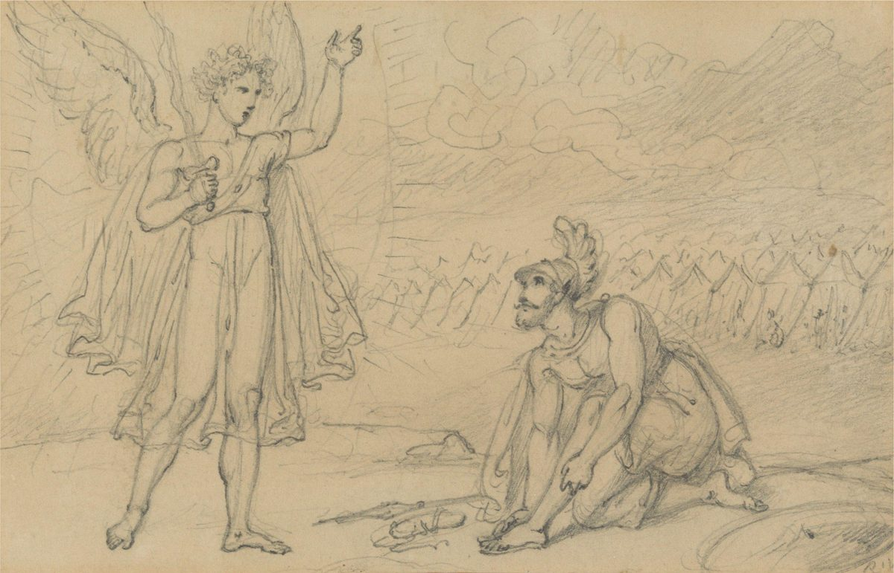

Josué 5 — La Traducción Mister

Westall dibuja el v13 y el v15 a la vez: la espada está desenvainada, y la sandalia ya está quitada; una sola sandalia, que es lo que dice el hebreo y lo que solo conservan la KJV, la ASV y la Ginebra. Las alas son del pintor; el texto dice un hombre, y Josué le pregunta de qué lado está porque no lo sabe distinguir. El campamento del fondo es Gilgal, las tiendas de una nación que aún se cura del v8; el casco con penacho y la coraza de Josué son de oficial romano, nada que el texto describa. Es un boceto de trabajo —la nube y las tiendas son unos pocos trazos— y no lleva fecha; el catálogo de Yale da solo antes de 1835, el año anterior a la muerte de Westall. El dedo alzado del jefe señala adonde señala el texto: lejos de sí mismo.
_-_B1986.12.4_-_Yale_Center_for_British_Art.jpg){kind=link}
★★★ El rollo dice hasta que NOSOTROS cruzamos; los masoretas leen hasta que ELLOS cruzaron; y dos testigos del estante imprimen el rollo. Las consonantes escritas en el texto son avarnu, «cruzamos»; la forma que los masoretas marcan para leer es avram, «su cruzar». La diferencia es real: la forma leída deja al narrador fuera del relato, contando lo que los reyes oyeron de ellos; la escrita lo mete dentro, uno de los que pasaron a pie. Esta traducción imprime la forma leída, como ha hecho en cada ketiv/qeré hasta ahora, y deja aquí constancia de la escrita, pero la escrita no está sola en este capítulo. El versículo 6 dice que la tierra fue jurada a sus padres para darNOS, sin ningún qeré que lo corrija, y Josué 4:23 (ya en estas páginas) acababa de enseñar a los padres a decir que el mar Rojo fue secado de delante de nosotros hasta que cruzamos. Un capítulo que abre con los reyes oyendo la noticia dice nosotros dos veces en seis versículos. La KJV lee ‘until we were passed over’, y la ASV lo mismo, ‘until we were passed over’: los dos testigos del estante que imprimen lo escrito y no lo leído; la NWT 1984 lee ‘until they had passed over’, la NIV ‘until they had crossed over’, la Geneva 1599 ‘until they were gone over’, la Douay-Rheims ‘till they passed over’; la Living Bible no tiene cláusula que lleve ni una ni otra. En español la RV60 y la RV 1909 leen «hasta que hubieron pasado», la TNM 1987 «hasta que hubieron pasado al otro lado», la TNM 2019 «hasta que lo cruzaron», la NVI «para que los israelitas lo cruzaran»: los cinco testigos del estante español en la forma leída. La Biblia griega tiene en tō diabainein autous, «en el cruzar de ellos», también la forma leída.
★★★ «Se derritió su corazón, y ya no hubo espíritu en ellos»: la frase de Rahab, dicha ahora por el narrador de los reyes. En su azotea Rahab había dicho lo oímos, y se derritió nuestro corazón, y ya no se levantó espíritu en ningún hombre a causa de vosotros (Josué 2:11, ya en estas páginas); el narrador lo cuenta ahora de todos los reyes al oeste del río, con el verbo que ella usó, masas. La forma vayimás, «y se derritió», está en tres versículos de este libro: el de ella, este, y el de 7:5 (ya en estas páginas), donde tras la derrota en Hai el corazón del pueblo se derritió y se volvió agua: el derretirse que sufren los cananeos en los capítulos 2 y 5 será el de Israel en el capítulo 7. Es el verbo que Deuteronomio 1:28 dio a los exploradores, nuestros hermanos han derretido nuestro corazón, y 20:8 al cobarde que debe volver a casa antes de que derrita el corazón de sus hermanos (los dos ya en estas páginas); y es lo que hacía el maná cuando el sol calentaba (Éxodo 16:21, ya en estas páginas), un capítulo antes de que el maná se detenga en este. Od rúaj, «espíritu ya», está en tres versículos de la Biblia hebrea: el de Rahab, este, y 1 Reyes 10:5 (todavía no en estas páginas), donde la reina de Sabá ve la mesa de Salomón y ya no hubo más espíritu en ella: el mismo giro para quedarse sin aliento, una vez de terror y otra de asombro. Y hovish, «secó», es el verbo que este libro ha ido pasando de boca en boca: está en tres versículos de este libro: Rahab, del mar Rojo (2:10); los padres, del Jordán y del mar Rojo juntos (4:23); y aquí los reyes, oyéndolo. La RV 1909 lee «desfalleció su corazón, y no hubo más espíritu en ellos», la RV60 revisa el último sustantivo, «no hubo más aliento en ellos», la TNM 1987 «empezó a derretírseles el corazón, y resultó que ya no había espíritu en ellos», y la NVI «¡No se atrevían a hacerles frente!». En inglés la KJV lee ‘their heart melted, neither was there spirit in them any more’, la ASV lo mismo; la NWT 1984 ‘their hearts began to melt, and there proved to be no spiritedness in them anymore’; la NIV ‘their hearts melted in fear and they no longer had the courage to face the Israelites’; la Geneva 1599 ‘their hearts fainted: and there was no courage in them anymore’; la Douay-Rheims ‘their heart failed them, and there remained no spirit in them’; la Living Bible ‘their courage melted away completely and they were paralyzed with fear’. La Biblia griega lee etakēsan autōn hai dianoiai, «se derritieron sus mentes», y añade un verbo que el hebreo no tiene, kateplagēsan, «quedaron aterrados». El resumen de Calvino: «antes de que empezara el combate, el enemigo ya estaba derrotado por el terror que la fama del milagro había inspirado».
★★ «Al otro lado del Jordán, hacia el oeste»: la frase nombra la orilla en la que está el narrador, y el mar que nombra es solo el mar. Be-éver ha-Yardén yámah está en tres versículos de la Biblia hebrea, todos de este libro (este, 12:7 y 22:7, ninguno todavía en estas páginas), y cada vez significa la orilla occidental, el lado al que Israel acaba de cruzar. La glosa de Rashi: «del lado al que cruzaron los hijos de Israel, que es el occidental, pues habían estado en el oriental». Al otro lado del Jordán no es un lugar fijo sino un punto de vista: Deuteronomio 1:1 y 1:5 (ya en estas páginas) lo usan de Moab, la orilla ORIENTAL, desde la perspectiva de la tierra, y este versículo lo usa de Canaán desde la perspectiva de Moab, y añade hacia el oeste para que el lector no se equivoque. «Todos los reyes de los amorreos» está en dos versículos de la Biblia hebrea, este y 10:6 (todavía no en estas páginas), donde Gabaón pide auxilio contra cinco de ellos; y el par —amorreos tierra adentro, cananeos junto al mar— es el mapa de los exploradores en Números 13:29 (ya en estas páginas): el amorreo habitan en la montaña; y el cananeo habita junto al mar y a la vera del Jordán. Tres versiones nombran el mar que el hebreo deja sin nombre: la NVI lee «de la costa del Mediterráneo», la Living Bible ‘along the Mediterranean coast’, y la Douay-Rheims ‘who possessed the places near the great sea’, el nombre que la propia Torá le da (Números 34:6, ya en estas páginas), importado aquí del latín de Jerónimo; la Biblia griega sustituye a los cananeos enteros por hoi basileis tēs Phoinikēs, «los reyes de Fenicia», un nombre griego para la misma costa. La RV60 lee «al otro lado del Jordán al occidente», la KJV ‘on the side of Jordan westward’, la ASV ‘beyond the Jordan westward’, la NWT 1984 ‘on the side of the Jordan to the west’, la NIV ‘west of the Jordan’. Un salto abierto, {פ}, cierra el versículo: los reyes se quedan con el corazón derretido, y la palabra siguiente es un cuchillo.
★★★ Los cuchillos son de piedra, y el último pedernal que la Torá puso a un prepucio estaba en la mano de Séfora. Jarvot tsurim, «cuchillos de pedernal», está en dos versículos de la Biblia hebrea, el v2 y el v3 de este capítulo, la orden y su ejecución palabra por palabra. Jérev es la palabra corriente para una espada —es la espada desenvainada en la mano del hombre en el v13— y tsur es roca, la Roca del cántico de Moisés (Deuteronomio 32:4, ya en estas páginas); un jérev de tsurim es una hoja hecha de piedras. En Éxodo 4:25 (ya en estas páginas) Séfora tomó un pedernal, un tsor, y cortó el prepucio de su hijo: la misma piedra, con otra vocal, camino de Egipto en un lugar de posada; aquí la misma piedra camino de Canaán en Gilgal, y las dos veces el corte es lo que se interpone entre Israel y lo siguiente que Dios va a hacer. La propia ley del altar en la Torá prefiere la piedra sin labrar al hierro (Deuteronomio 27:5, ya en estas páginas). El Targum leyó el adjetivo en vez del sustantivo, «cuchillos afilados», y Rashi lo sigue, citando el Salmo 89:44 (todavía no en estas páginas), donde tsur jarbó es el filo de su espada: «cuando el filo se vuelve de lado no corta bien». Esa lectura es la de la Reina-Valera en sus dos ediciones, RV 1909 y RV60 «Hazte cuchillos afilados», la de la KJV, ‘Make thee sharp knives’, y la de la Geneva 1599, ‘Make thee sharp knives’. La piedra es la de la TNM 1987, «Hazte cuchillos de pedernal», la de la NWT 1984, ‘Make for yourself flint knives’, la de la NIV, ‘Make flint knives’, y la de la Douay-Rheims, ‘Make thee knives of stone’, tras el cultros lapideos de Jerónimo; la NVI conserva las dos cosas, «cuchillos de piedra afilada». La Biblia griega también tenía las dos, y más: machairas petrinas ek petras akrotomou, «cuchillos de piedra de roca cortada a filo». La Living Bible hace que el Señor les mande ‘to manufacture flint knives for this purpose’, e imprime el mismo párrafo dos veces, una bajo el v2 y otra bajo el v3.
★★★ «Circuncida otra vez a los hijos de Israel, por segunda vez»: dos palabras para una idea, y una pregunta que el texto responde a su manera cuatro versículos después. Ve-shuv mol … shenit: shuv, el verbo volver, usado como el hebreo lo usa para otra vez, y luego shenit, por segunda vez, diciéndolo una vez más. Esta traducción conserva las dos. La Reina-Valera tiene el giro que el español guarda para esto, «vuelve a circuncidar la segunda vez», volver a circuncidar, tanto en la RV 1909 como en la RV60; la TNM 2019 lee «para volver a circuncidar» y deja caer la segunda vez. La KJV lee ‘circumcise again the children of Israel the second time’, la ASV lo mismo; la NWT 1984 ‘circumcise the sons of Israel again, the second time’; la Douay-Rheims conserva una, ‘circumcise the second time the children of Israel’, y la NIV la otra, ‘circumcise the Israelites again’. ⚠ La Geneva 1599 lee shuv como verbo por derecho propio: ‘Make thee sharp knives, and return, and circumcise the sons of Israel the second time’, Josué mandado a volver a alguna parte primero. La Biblia griega leyó las consonantes de shuv como otro verbo, yashav, sentarse, e imprime kathisas periteme, «siéntate y circuncida», otra lectura de las mismas consonantes, que el inglés de Brenton transmite con fidelidad, ‘sit down and circumcise the children of Israel the second time’. Qué significa la segunda vez se discute desde el Talmud. Rashi, siguiendo Yevamot 71b, toma la primera vez por la noche del éxodo, cuando todos los hijos de Israel hicieron lo que la ley de la Pascua exigía (Éxodo 12:48–50, ya en estas páginas), y explica el hueco de cuarenta años por una tradición según la cual «el viento del norte no sopló para ellos, y no tuvieron un día apto para circuncidarse»; añade que «nuestros Sabios dijeron: La segunda vez se refiere a descubrir la corona en la circuncisión», una segunda fase del rito no dada a Abraham: dos lecturas, consignadas aquí como suyas. Calvino encuentra todo el hueco «muy extraño y casi monstruoso» y lo lee como juicio: «el uso de la circuncisión cesó durante todo aquel período como señal de maldición o de rechazo», un pueblo que ve en sus propios hijos lo que había perdido. La explicación del propio texto es la del narrador, en los vv4–7, y no da razón de la omisión, solo el hecho. La Living Bible pone la aritmética entre paréntesis, ‘(It was the second time in Israel’s history that this was done.)’.
★★ Guibeat-haaralot, la Colina de los Prepucios: un lugar nombrado por lo que quedó encima. El nombre está en un versículo de la Biblia hebrea. Son dos palabras corrientes con artículo, la colina de los prepucios, siendo orlá el sustantivo que Génesis 17:11 (ya en estas páginas, todavía no en español) acuñó sobre la propia carne de Abraham; Rashi: «llamada así por el suceso, que se convirtieron en una especie de colina». Esta traducción imprime el nombre y lo glosa, como hace la página de Números 11 con Tabera. El estante se divide según oiga o no un nombre. La RV 1909 lee «el monte de los prepucios», la KJV, la ASV y la Geneva 1599 ‘the hill of the foreskins’, la Douay-Rheims ‘in the hill of the foreskins’, la Living Bible ‘The Hill of the Foreskins’; la TNM 1987 lee «Guibeat-haaralot», la NIV ‘Gibeath Haaraloth’, y la NWT 1984 igualmente lo conserva como nombre; y la RV60 y la NVI traducen la mitad, «el collado de Aralot» y «la colina de Aralot», una colina española con unos prepucios hebreos. La Biblia griega lee epi tou kaloumenou topou Bounos tōn akrobystiōn, «en el lugar llamado Colina de los Prepucios», y no ha terminado con estos cuchillos. En el Josué griego, en 21:42 y otra vez en 24:31 (en la numeración de Brenton; ninguno de los dos capítulos todavía en estas páginas), dos frases que el hebreo no tiene siguen a los cuchillos hasta la tumba de Josué: allí pusieron con él, en el sepulcro en que lo enterraron, los cuchillos de piedra con los que circuncidó a los hijos de Israel en Gálgala … y allí están hasta el día de hoy: una reliquia, con el hasta el día de hoy del propio libro pegado a ella. Esta página consigna la adición griega como del griego. Josefo, que cuenta el cruce, las doce piedras, la Pascua y el fin del maná en un solo párrafo (Antigüedades 5.1.4), no menciona la circuncisión en absoluto.
★★★ El narrador detiene el relato para explicar, y la explicación es que toda una generación nació y nunca fue circuncidada. Ve-zeh ha-davar asher, «y esta es la razón por la que», está en cuatro versículos de la Biblia hebrea, y el primero es Éxodo 29:1 (ya en estas páginas), esto es lo que harás por ellos, para santificarlos: la consagración de los sacerdotes, abierta con la frase que aquí abre la de una nación. El argumento de los vv4–5 es un silogismo: todo el que salió de Egipto estaba circuncidado (Éxodo 12:48, ya en estas páginas, lo había hecho condición para comer la Pascua, y 12:50 dice todos los hijos de Israel hicieron); los hombres de guerra de entre ellos están todos muertos; los nacidos por el camino no fueron circuncidados; luego el ejército que va a tomar Jericó es, salvo Josué, Caleb y quien salió de Egipto siendo niño, un ejército incircunciso. Ha-zejarim, «los varones», es la palabra de Génesis 17:10 (ya en estas páginas, todavía no en español), todo varón de entre vosotros será circuncidado. El verbo es activo y sin sujeto, lo-malu, «no habían circuncidado»: la TNM 1987 lo conserva, «no lo habían circuncidado», como la KJV, ‘them they had not circumcised’, la ASV, ‘they had not circumcised’, y la NWT 1984, ‘they had not circumcised’; la RV60 lo vuelve pasivo, «no estaba circuncidado», y la NIV y la Geneva 1599 también, ‘had not’ y ‘were not circumcised’. ⚠ La Biblia griega cuenta aquí otra historia, y no es pequeña. Su v4 hace que Josué circuncide a cuantos nacieron por el camino, y a cuantos estaban incircuncisos de los que salieron de Egipto; su v5 da a la peregrinación cuarenta y dos años, tessarakonta kai dyo etē, donde todo testigo hebreo tiene cuarenta; y su v6 dice que la mayoría de los hombres de guerra que salieron de la tierra de Egipto estaban incircuncisos: exactamente lo contrario del todo el pueblo que salió estaba circuncidado del hebreo. Su desierto de Mabdaris es la palabra hebrea para desierto, ha-midbar, pasada al griego como si fuera un nombre. La Douay-Rheims, traduciendo el latín de Jerónimo, conserva los hechos del hebreo y remodela las frases, ‘during the time of the long going about in the way’ en el v4 y, en el v6, ‘in the wide wilderness’. La Living Bible imprime un párrafo para los vv4–5 y, como hizo en los vv2–3, lo pone bajo los dos números. Para los hombres de guerra la RV60 lee «hombres de guerra», la NVI «en edad militar»; la KJV y la ASV ‘men of war’, la NIV ‘men of military age’, la Douay-Rheims ‘men fit for war’, la Living Bible ‘old enough to bear arms’.
★★★ El versículo 6 es Deuteronomio 2:14 dicho otra vez, con nación donde Moisés dijo generación, y termina en nosotros. Deuteronomio 2:14 (ya en estas páginas): hasta que toda la generación de los hombres de guerra hubo perecido de en medio del campamento, tal como Jehová les había jurado. Este versículo: hasta que se acabó toda la nación, los hombres de guerra que habían salido de Egipto … a quienes Jehová juró. El verbo es el que este libro ha venido usando para el cruce: ad-tom, «hasta que … se acabó», está en once versículos de la Biblia hebrea, y dos de ellos son de este libro: 4:10, donde los sacerdotes estuvieron en el río hasta que se acabó todo, y este, donde una nación anduvo hasta que se acabó ella; el juramento que recuerda es Números 14:33, hasta que vuestros cadáveres se acaben en el desierto, y 32:13, hasta que se acabó toda aquella generación que había hecho el mal ante los ojos de Jehová (todos ya en estas páginas). «No habían escuchado la voz de Jehová» está en cuatro versículos de la Biblia hebrea, y uno de ellos es el Salmo 106:25 (todavía no en estas páginas), que vuelve a contar esta misma frase: murmuraron en sus tiendas; no escucharon la voz de Jehová. Zavat jalav u-devash, «que mana leche y miel», está en veinte versículos de la Biblia hebrea, y en un versículo de este libro: este, la frase de la zarza ardiente (Éxodo 3:8, ya en estas páginas, todavía no en español) usada el día en que el pueblo al que se le prometió está de pie en ella. ⚠ Y luego latet lanu, para darNOS. El narrador que escribió cruzamos en el v1 y fue corregido por los masoretas escribe nos aquí y no es corregido: la tierra fue jurada a sus padres para dársela a nosotros. Diez de las trece versiones de los dos estantes conservan el pronombre: la RV60 «que nos la daría», la TNM 1987 «darnos», la TNM 2019 lo dobla, «que nos daría a nosotros», la KJV ‘that he would give us’, la ASV ‘that he would give us’, la Geneva 1599 ‘that he would give us’, la NIV ‘to give us’, la NWT 1984 ‘to give to us’; y tres no: la NVI lee «les daría», a ellos; la Living Bible ‘the land he had promised to Israel’; y la Douay-Rheims deja caer la cláusula, ‘that he would not shew them the land flowing with milk and honey’. Es el mismo nosotros del no con nuestros padres, sino con nosotros de Deuteronomio 5:3 (ya en estas páginas), y el mismo que se enseñó a decir a los padres en 4:23.
★★ «A sus hijos los levantó en su lugar»: el verbo que levantó doce piedras, y una expresión que Deuteronomio guarda para una nación que desplaza a otra. Heqim tajtam, «los levantó en su lugar», está en un versículo de la Biblia hebrea. Heqim es el verbo de 4:9 y 4:20, levantó Josué doce piedras; lo siguiente que se levanta es una generación, y es Dios quien la levanta. Tajtam, «en su lugar», viene dos veces en dos versículos —los hijos levantados en su lugar aquí, y el campamento entero quedándose en su lugar en el v8—, y Deuteronomio 2:12, 2:21, 2:22 y 2:23 (todos ya en estas páginas) usan exactamente esa expresión, habitaron en su lugar, de los hijos de Esaú desplazando a los horeos, de Amón a los zomzomeos y de los caftoreos a los aveos: el vocabulario de un pueblo que sucede a otro en una tierra, vuelto aquí sobre los hijos de Israel sucediendo a sus propios padres. Son los niños que Deuteronomio 1:39 (ya en estas páginas) prometió que entrarían, que hoy no saben distinguir el bien del mal. Arelim hayú, «eran incircuncisos», está en un versículo de la Biblia hebrea, y la frase da la razón dos veces, ki … ki, porque eran incircuncisos, porque no los habían circuncidado. La RV60 lee «que él había hecho suceder en su lugar», la NVI nombra el sujeto que el hebreo deja en él, «a quienes Dios puso en lugar de ellos», la TNM 2019 «los reemplazó con sus hijos»; la KJV ‘their children, whom he raised up in their stead, them Joshua circumcised’, la ASV ‘their children, whom he raised up in their stead’, la NWT 1984 ‘their sons he raised up instead of them’, la NIV ‘So he raised up their sons in their place’; la Douay-Rheims ‘The children of these succeeded in the place of their fathers’; la Living Bible ‘the men who had grown up to take their fathers’ places’, y deja caer las dos cláusulas con porque.
★★★ Tammu jol-ha-goy, «toda la nación acabó», por tercera vez, y el infinitivo que le sigue es el que usaron los hijos de Jacob en Siquem. La cláusula está en tres versículos de la Biblia hebrea, todos de este libro: 3:17 y 4:1 (ya en estas páginas), de una nación que acabó de cruzar, y este, de una nación que acabó de circuncidarse: la tercera entrega que prometía la página de Josué 4. El infinitivo es le-himmol, «circuncidarse», y esa forma está en dos versículos de la Biblia hebrea: este, y Génesis 34:17 (ya en estas páginas), las condiciones que los hijos de Jacob ponen a los hombres de Siquem: si no nos escucháis, para circuncidaros, tomaremos a nuestra hija y nos iremos. Todo lector del Génesis sabe cómo acabó aquella circuncisión: al tercer día, cuando estaban adoloridos, Simeón y Leví tomaron cada uno su espada, y vinieron sobre la ciudad confiada (34:25). Una nación entera está ahora en la misma condición a pocos kilómetros de una ciudad amurallada, y Calvino traza la línea él mismo: «si en circunstancias semejantes dos hijos de Jacob pudieron abrirse paso hasta la ciudad de Siquem y saquearla, tras matar a sus ciudadanos, cuánto más fácil habría sido para las naciones vecinas atacar a los israelitas así heridos» —«una prueba triste y severa que Dios no quisiera que el pueblo fuera circuncidado hasta verse cercado de enemigos por todas partes». El versículo 1 es la respuesta que el capítulo dio antes de la pregunta: el corazón de los reyes ya se había derretido. Vayeshvú tajtam, «se quedaron en su lugar», es otra vez el tajtam del v7; el Targum lee «en sus lugares», y Rashi añade lo que significa: «y no pusieron sitio a la ciudad». Ad jayotam está en un versículo de la Biblia hebrea, y la palabra no es sanar sino vivir: el infinitivo de jayá, vivir, el verbo que este libro usará en 9:15 (todavía no en estas páginas) cuando Josué haga pacto con los gabaonitas para dejarlos vivir: el campamento se quedó quieto hasta que estuvo vivo otra vez. La TNM 1987 lee «se quedaron sentados en su lugar en el campamento hasta que revivieron», la más cercana del estante, y la NWT 1984 ‘they kept sitting in their place in the camp until they revived’; la RV60 «hasta que sanaron», la NVI «hasta que se recuperaron»; la KJV y la ASV ‘they abode in their places in the camp, till they were whole’, la Geneva 1599 ‘till they were whole’; la NIV ‘they remained where they were in camp until they were healed’, la Douay-Rheims ‘until they were healed’; la Living Bible lee ‘until the raw flesh of their wounds had been healed’ y traslada la frase entera al final del v9, después de nombrar Gilgal.
★★★ «Hoy he hecho rodar de sobre vosotros el oprobio de Egipto»: y el verbo es el de Jacob en el pozo. Galloti, de galal, rodar: leída como este verbo, la forma está en un versículo de la Biblia hebrea (las mismas letras escriben mis desterrados en Isaías 45:13 y una palabra para sendas en el Salmo 17:5, de modo que el recuento es por lectura). Es el verbo de Génesis 29:10 (ya en estas páginas, todavía no en español), donde Jacob rodó la piedra de la boca del pozo, y de la piedra que los pastores ruedan de encima en los versículos anteriores; y es el verbo de la oración de un salmo, cuyo par está en un versículo de la Biblia hebrea, el Salmo 119:22 (todavía no en estas páginas): gal me-alai jerpá, rueda de sobre mí el oprobio: el mismo verbo, el mismo sustantivo y la misma preposición, me-al, de sobre, que esta frase. Rashi cita los dos. El juego es sobre el nombre del campamento: Gilgal, con artículo, es un círculo o una rueda —un anillo de piedras, lo más probable—, y el nombre ya estaba en uso en 4:19 y, de algún Gilgal, en Deuteronomio 11:30 (los dos ya en estas páginas), que es por lo que la página de Josué 4 llamó a su uso allí un nombrar «por anticipación». Seis de las trece versiones conservan el rodar: la TNM 1987 lee «Hoy he hecho rodar de sobre ustedes el oprobio de Egipto», la KJV y la ASV ‘This day have I rolled away the reproach of Egypt from off you’, la NWT 1984 ‘Today I have rolled away the reproach of Egypt from off YOU’, la NWT 2013 ‘Today I have rolled away from you the reproach of Egypt’, la NIV ‘Today I have rolled away the reproach of Egypt from you’; el resto pierde el juego: la RV 1909 y la RV60 «Hoy he quitado de vosotros el oprobio de Egipto», la TNM 2019 «les he quitado de encima la deshonra de Egipto», la Geneva 1599 ‘taken away the shame of Egypt’, la Douay-Rheims ‘taken away from you the reproach of Egypt’, y la Biblia griega apheilon, «he quitado», que además deja caer el hasta el día de hoy y añade un patronímico, Josué hijo de Navé. Dos versiones aportan una etimología propia: Josefo escribe que el campamento «se llamó Gilgal, que significa libertad; pues como ahora habían cruzado el Jordán, se consideraban libres de las miserias que habían padecido de los egipcios y en el desierto» (Antigüedades 5.1.11), y la Living Bible lee ‘the place where this was done was called Gilgal (meaning, “to end”)’. Ninguna de las dos es lo que la palabra significa.
★★★ ¿Qué era el oprobio de Egipto? El texto no lo dice, y cuatro lecturas llevan siglos en pie. Jerpat Mitsráyim está en un versículo de la Biblia hebrea. Jerpá es un reproche en la boca o una deshonra sobre el cuerpo, y cada lectura escoge uno. (1) La deshonra de estar incircunciso: Génesis 34:14 (ya en estas páginas) usa este mismo sustantivo de ella, dar nuestra hermana a un hombre incircunciso, porque eso es una afrenta para nosotros; la Living Bible imprime esta lectura como texto, ‘Today I have ended your shame of not being circumcised’. (2) La burla que Egipto habría hecho si Israel hubiera muerto en el desierto: ¿por qué han de hablar los egipcios, diciendo: Para mal los sacó, para matarlos en los montes (Éxodo 32:12, ya en estas páginas; Deuteronomio 9:28 hace el mismo argumento); Rashi consigna la lectura de Rabí Moshé ha-Darshán, en la que los egipcios habían nombrado un presagio de sangre contra ellos y «la multitud mixta que subió con ellos seguía burlándose de ellos», hasta que la sangre de la circuncisión respondió al presagio. (3) La deshonra de haber sido esclavos: la NVI imprime esta como texto, «Hoy les he quitado de encima la vergüenza de haber sido esclavos en Egipto». (4) La de Calvino: la acusación de ser desertores, «Podrían, por tanto, haber sido tenidos por desertores, si la deshonra no hubiera sido borrada por la apelación a la circuncisión, con la que la elección divina fue sellada en su carne antes de que bajaran a Egipto». El hebreo admite cualquiera de ellas y no escoge ninguna; esta traducción conserva oprobio de Egipto, tan abierto como el original, y deja aquí la elección. La fórmula del nombre, vayiqrá shem ha-maqom ha-hu, está en tres versículos de la Biblia hebrea: el Mahanaim de Jacob, campamento de Dios (Génesis 32:3, ya en estas páginas, todavía no en español), Tabera (Números 11:3, ya en estas páginas), y este campamento; el sujeto es el él impersonal que el hebreo usa por uno, y el estante se divide sobre quién hizo el llamar: la RV60 lee «el nombre de aquel lugar fue llamado Gilgal», la TNM 1987 «aquel lugar vino a llamarse por nombre Guilgal», la NVI «aquel lugar se llama Guilgal», la Geneva 1599 ‘he called the name of that place, Gilgal’, la KJV ‘the name of the place is called Gilgal’, la ASV ‘the name of that place was called Gilgal’, la NWT 1984 ‘the name of that place came to be called Gilgal’, la NIV ‘the place has been called Gilgal to this day’. Esta traducción lo imprime como lo hace la página de Números 11, llamó, con el sujeto sin nombrar. Y ad ha-yom ha-zeh, hasta el día de hoy, es el segundo de los quince versículos de este libro que lo llevan, después de las piedras en el río de 4:9: un nombre todavía en el mapa cuando se escribió la frase.
★★★ «Celebraron la Pascua»: la última vez que la Biblia dijo esas palabras, el campamento estaba en el Sinaí, en el segundo año. Vaya’asú et-ha-pésaj está en dos versículos de la Biblia hebrea: Números 9:5 (ya en estas páginas), celebraron la Pascua en el primer mes, el día catorce del mes, entre las dos tardes, en el desierto de Sinaí, y este versículo. Entre los dos la Torá da leyes para la Pascua y ningún relato de una celebrada, y los lectores se han dividido sobre el silencio: Calvino sostiene que se celebró cada año y que el texto simplemente no lo dice, y argumenta contra «algunos que piensan que las palabras usadas implican que la práctica era inusual. De ahí infieren que, como la circuncisión, se había interrumpido durante un período de cuarenta años»; su propio editor, en una nota, se pone del lado de los algunos, citando la prohibición a los incircuncisos de Éxodo 12:48 y el cuando entréis en la tierra … guardaréis este servicio de 12:25. Sea como sea, el orden de este capítulo es el orden de aquella ley: primero la circuncisión, luego la Pascua, porque ningún incircunciso comerá de ella. «El día catorce del mes» está en cinco versículos de la Biblia hebrea, y aquí no se nombra el mes; 4:19 lo había dado, el primero. La-jódesh ba-érev, «del mes, por la tarde», está en tres versículos de la Biblia hebrea: Éxodo 12:18, la ley de la Pascua; Levítico 23:32, el atardecer del Día de la Expiación (los dos ya en estas páginas); y este. Be-arvot Yerijó paga las llanuras de Jericó de 4:13, y responde al libro de Números, cuya Pascua se celebró en el Sinaí y cuyo último campamento fueron las llanuras de Moab (Números 22:1, ya en estas páginas): la primera Pascua en la tierra se celebra en una llanura con la ciudad enemiga en el nombre. Josefo tiene un altar hecho con las doce piedras y un sacrificio ofrecido sobre él antes de la fiesta (Antigüedades 5.1.4), ninguna de las dos cosas mencionada por el hebreo. La RV60 lee «celebraron la pascua a los catorce días del mes, por la tarde, en los llanos de Jericó», la TNM 1987 «procedieron a llevar a cabo la pascua» «en las llanuras desérticas de Jericó»; la KJV ‘kept the passover on the fourteenth day of the month at even in the plains of Jericho’, la ASV lo mismo; la NIV ‘celebrated the Passover’; la Douay-Rheims ‘they kept the phase’, el latín de Jerónimo para la fiesta pasado al inglés como una palabra; la NVI añade el mes, «del día catorce del mes primero». ⚠ La Living Bible lee ‘during the evening of April first’, y en 4:19 había fechado el cruce ‘the 25th of March’: siete días en su calendario entre el diez del mes y el catorce, donde el texto tiene cuatro.
★★★ «Al día siguiente de la Pascua» es el día en que Israel salió de Egipto: las mismas tres palabras, cuarenta años después, día por día. Mi-mojorat ha-pésaj está en dos versículos de la Biblia hebrea: Números 33:3 (ya en estas páginas), al día siguiente de la Pascua salieron los hijos de Israel con mano alzada, ante los ojos de todos los egipcios, y este versículo, donde comen la tierra. El quince del mes primero, fuera de Egipto; el quince del mes primero, dentro de la comida de Canaán. Mojorat es el sustantivo de majar, el mañana en que los hijos hacen sus preguntas en 4:6. Lo que comen es avur ha-árets, y leído como este sustantivo, avur está en dos versículos de la Biblia hebrea: el v11 y el v12 de este capítulo, y en ninguna otra parte; está formado sobre avar, el verbo que este libro viene usando para cruzar, y los léxicos lo toman como lo que ha pasado, la cosecha ya recogida. Por eso la KJV lee ‘the old corn of the land’ en los dos versículos, siguiendo a los rabinos, para quienes la cosecha nueva no podía tocarse hasta que se hubiera mecido la gavilla de Levítico 23:10–14 (ya en estas páginas) —Rashi: «Este fue el día de mecer el Ómer, pues ofrecieron primero el Ómer»—, y Calvino coincide por otros motivos: «esto ha de entenderse del producto del año anterior». La RV60 lee «del fruto de la tierra», la NVI «de los productos de la tierra»; la ASV ‘the produce of the land’, la NWT 1984 ‘the yield of the land’, la NIV ‘the produce of the land’, la Geneva 1599 ‘the corn of the land’, la Douay-Rheims ‘the corn of the land’ y luego, en el v12, ‘the corn of the present year’, lo contrario del old de la KJV; la Living Bible ‘the gardens and grain fields which they invaded’. Matsot ve-qalui, «panes sin levadura y grano tostado», está en un versículo de la Biblia hebrea; la palabra qalui por sí sola está en dos versículos de la Biblia hebrea, este y Levítico 2:14 (ya en estas páginas), la ofrenda de primicias de espigas frescas tostadas al fuego; y la lista de Levítico 23:14 de lo que no puede comerse antes de mecer la gavilla es pan, ni grano tostado, ni espigas frescas. La comida nombrada aquí es la comida que nombra aquella ley. La RV60 lee «los panes sin levadura, y en el mismo día espigas nuevas tostadas», la NVI «panes sin levadura y de trigo tostado»; la KJV ‘unleavened cakes, and parched corn’, la ASV ‘unleavened cakes and parched grain’, la NWT 1984 ‘unfermented cakes and roasted grains’, la NIV ‘unleavened bread and roasted grain’; la Douay-Rheims ‘unleavened bread of the corn of the land, and frumenty’, una palabra para trigo hervido. Luego la fecha: be-étsem ha-yom ha-zeh, «en ese mismo día», está en catorce versículos de la Biblia hebrea, y la Torá la reserva para sus días de más peso: Noé entrando en el arca (Génesis 7:13, ya en estas páginas, todavía no en español), el éxodo mismo (Éxodo 12:17, 41, 51), Moisés mandado a subir al Nebo (Deuteronomio 32:48), y, dos veces, Abraham: en ese mismo día fue circuncidado Abraham, e Ismael su hijo (Génesis 17:23, 26, ya en estas páginas, todavía no en español). Un capítulo de circuncisión fecha su primera comida con la frase de la primera circuncisión. La RV60 lee «en el mismo día», la TNM 1987 «en este mismo día»; la KJV y la ASV ‘in the selfsame day’, la NWT 1984 ‘on this same day’, la NIV ‘that very day’; la NVI y el griego lo dejan caer.
★★★ Y cesó el maná: el verbo es shavat, el maná guarda un sábado, y una frase de Éxodo 16 se paga cuarenta años después. Vayishbot ha-man está en un versículo de la Biblia hebrea. El verbo es el que Génesis 2:2 (ya en estas páginas, todavía no en español) usa de Dios en el séptimo día, reposó de toda la obra que había hecho, y el que el propio capítulo del maná usa del pueblo en su primer sábado, así el pueblo reposó el séptimo día (Éxodo 16:30, ya en estas páginas): el pan que enseñó a Israel a parar el séptimo día para. Aquel capítulo había terminado con la frase que este versículo paga: comieron los hijos de Israel maná cuarenta años, hasta que llegaron a tierra habitada; maná comieron hasta que llegaron a los límites de la tierra de Canaán (16:35), y Deuteronomio 8:3 y 8:16 (ya en estas páginas) habían dicho para qué fueron los cuarenta años de maná. Rashi hace que el maná deje de caer el día en que murió Moisés, el siete de Adar, y que el pueblo coma de lo que tenía en sus vasijas hasta esta mañana: una lectura, consignada como suya. Tevuat érets Kenáan, la cosecha de la tierra de Canaán: la frase la tierra de Canaán está en ocho versículos de este libro, y este es el primero: el narrador da a la tierra su nombre el día en que se come su pan. La Biblia griega lee en tautē tē hēmera exelipe to manna, «en ESTE día faltó el maná», donde el hebreo tiene al día siguiente, y tēn chōran tōn Phoinikōn, «la tierra de los fenicios», por Canaán, como en el v1; Josefo, «entonces fue cuando su antiguo alimento, que era el maná, y del que habían comido cuarenta años, les faltó» (Antigüedades 5.1.4). La RV60 lee «el maná cesó el día siguiente» y «nunca más tuvieron maná», la TNM 1987 «no ocurrió más maná»; la NVI conserva el cese y el año y deja caer la cláusula del medio, «Un día después dejó de caer maná y durante ese año el pueblo se alimentó de los frutos de la tierra de Canaán»; la KJV ‘the manna ceased on the morrow after they had eaten of the old corn of the land’, la ASV ‘the manna ceased on the morrow, after they had eaten of the produce of the land’, la NWT 1984 ‘the manna ceased on the following day’, la NIV ‘The manna stopped the day after they ate this food from the land’, la Geneva 1599 ‘the Manna ceased on the morrow’; la Living Bible ‘no manna fell, and it was never seen again!’. La parábola de Rashi sobre ya no hubo más maná: un niño al que se le pregunta por qué come pan de cebada contesta: porque no tengo pan de trigo; comieron el grano de la tierra porque el maná se había ido, y no al revés. Un salto cerrado, {ס}, termina el párrafo, y el hombre de la espada es la palabra siguiente.
★★★ Josué ve al hombre como Abraham vio a sus tres visitantes, y la espada en la mano del hombre es la que vio el asna de Balaam. Vayissá einav vayar ve-hinneh, «alzó sus ojos y miró, y mira —», está en tres versículos de la Biblia hebrea: Génesis 18:2 (ya en estas páginas, todavía no en español), Abraham a la puerta de la tienda, y mira —tres hombres de pie junto a él; Génesis 24:63 (ya en estas páginas, todavía no en español), Isaac en el campo al caer la tarde, viendo venir camellos; y este versículo, Josué en Jericó viendo a un solo hombre. Dos veces en la Biblia un hombre alza los ojos y encuentra de pie a alguien que es más de lo que parece. «Y mira —un hombre de pie» está en un versículo de la Biblia hebrea, y le-negdó, «frente a él», está en un versículo de la Biblia hebrea: el négued de una ayuda correspondiente a él de Génesis 2:18 (ya en estas páginas, todavía no en español), la palabra para algo puesto enfrente de uno, cara a cara. Ve-jarbó shelufá be-yadó, «con su espada desenvainada en la mano», está en tres versículos de la Biblia hebrea, y las otras dos están en mano de un ángel: Números 22:23, donde el asna ve al ángel de Jehová de pie en el camino con su espada desenvainada en la mano y Balaam no, hasta 22:31 (los dos ya en estas páginas), cuando se inclinó y cayó sobre su rostro; este versículo; y 1 Crónicas 21:16 (todavía no en estas páginas), donde David ve al ángel de pie entre la tierra y el cielo, con su espada desenvainada en la mano sobre Jerusalén, y también cae sobre su rostro. Josué es el único de los tres que camina hacia la espada. Bi-Yrijó es, en hebreo, «en Jericó»: la ciudad está cerrada (6:1, ya en estas páginas) y Josué no está dentro; Rashi toma la preposición por la regla rabínica de que los alrededores de una ciudad cuentan como la ciudad, y esta traducción imprime en en el sentido que la misma preposición tiene en el en Gilgal del v10. Calvino piensa que Josué estaba solo y «se había apartado para examinar por dónde debía atacarse la ciudad». Ha-lanu attah, «¿eres de los nuestros?», está en un versículo de la Biblia hebrea; el Targum, según consigna Rashi, lo parafrasea «¿has venido a apoyarnos?». La RV60 lee «¿Eres de los nuestros, o de nuestros enemigos?», la TNM 1987 «¿Estás de parte de nosotros, o de nuestros adversarios?», y la NVI hace que Josué trate de usted al desconocido, «¿Es usted de los nuestros o del enemigo?»; la KJV lee ‘there stood a man over against him with his sword drawn in his hand’ y ‘Art thou for us, or for our adversaries?’, la ASV lo mismo; la NWT 1984 ‘a man standing in front of him with his drawn sword in his hand’ y ‘Are you for us or for our adversaries?’; la NIV ‘Are you for us or for our enemies?’; la Geneva 1599 ‘Art thou on our side, or on our adversaries?’; la Douay-Rheims ‘Art thou one of ours, or of our adversaries?’ y, para el lugar, ‘in the field of the city of Jericho’; la Living Bible ‘Are you friend or foe?’, y tiene a Josué ‘sizing up the city of Jericho’.
★★★ «No»: el hombre rechaza la disyuntiva de la pregunta, y da un título que no existe en ningún otro versículo de la Biblia. Lo: ni de vosotros, ni de ellos. Calvino: «la negación se aplica por igual a las dos partes de la pregunta, a saber, que no era ni israelita ni cananeo, y equivalía así a negar que fuese un hombre mortal». La RV60 y la TNM 1987 leen «No», la NVI «¡De ninguno!», la KJV y la ASV ‘Nay’, la NWT 1984 ‘No’, la NIV hace explícita la lógica, ‘Neither’; la Living Bible deja caer la palabra y le deja responder con su rango. ⚠ También lo hace la Biblia griega, que no tiene no alguno: egō archistratēgos dynameōs Kyriou nyni paragegona, «yo, el capitán general del ejército del Señor, he venido ahora», y tampoco tiene postración, solo Josué cayendo sobre su rostro y preguntando, despota, ti prostasseis tō sō oiketē, «Amo, ¿qué mandas a tu siervo?». Sar-tsevá-Yehováh, «el jefe del ejército de Jehová», está en dos versículos de la Biblia hebrea, el v14 y el v15; el título corriente sar ha-tsavá, el jefe del ejército de un rey, está en diez versículos —el de Abner, el de Joab, el de Naamán—, y uno de los diez es Daniel 8:11 (todavía no en estas páginas), el príncipe del ejército, contra el que el cuerno pequeño se engrandece; Daniel 10:21 llama a Miguel vuestro príncipe y 12:1 (ya en estas páginas, todavía no en español) el gran príncipe, y Rashi lo nombra aquí: «el oficial mencionado aquí es el ángel Miguel». Un sar es cualquier jefe con hombres a su mando, y el tsavá que manda es, en este libro, Israel —el ejército de 4:13—, o el ejército del cielo, o ambos; Calvino lee Israel, «el pueblo escogido, al que honrosamente llama el ejército del Señor», e identifica al jefe con el ángel del éxodo y, a través de Pablo (1 Corintios 10:4), con Cristo: «De este hecho Pablo es testigo competente, pues declara claramente que era Cristo». Tres lecturas, pues, con su pedigrí: un ángel, y Miguel en particular (Rashi, tras Daniel); el ángel de Jehová que es la propia presencia de Jehová, como en la zarza; y un Cristo preencarnado (Calvino, y muchos tras él); y esta traducción imprime jefe y deja la identificación donde la deja el hebreo, en manos del lector. Lo que el texto mismo hace es más extraño que cualquiera de ellas: el hombre nunca dice lo que vino a decir. El versículo 15 termina con una sandalia, y las palabras siguientes son Y Jehová dijo a Josué: Mira, yo he entregado en tu mano a Jericó (6:2, ya en estas páginas): el mensaje que traía el jefe, en boca de Jehová, al otro lado de una división de capítulos. Attah vati, «ahora he venido», está en un versículo de la Biblia hebrea; Rashi oye en él una comparación con Moisés, al que se le ofreció un ángel y lo rehusó (Éxodo 33:15, ya en estas páginas): «en los días de tu maestro Moisés vine, pero él no quiso mi presencia». Para el título la RV60 lee «Príncipe del ejército de Jehová», la TNM 1987 «príncipe del ejército de Jehová», la NVI «comandante del ejército»; la KJV ‘captain of the host’, la ASV y la NWT 1984 ‘prince of the host of Jehovah’ y ‘prince of the army of Jehovah’, la NIV ‘commander of the army’, la Geneva 1599 ‘a captain of the host’, la Douay-Rheims ‘prince of the host’, la Living Bible ‘the Commander-in-Chief’. Luego la postura de Josué, y una costura doctrinal en el estante: el-panav ártsah, «sobre su rostro a tierra», con esta preposición está en dos versículos de la Biblia hebrea (el otro es Joab ante David, 2 Samuel 14:22, todavía no en estas páginas), y el verbo que sigue es hishtajaváh, postrarse, la única palabra que el hebreo tiene para la reverencia de un cortesano y para la adoración. Siete versiones lo leen como adoración —la RV 1909 y la RV60 «le adoró», la KJV ‘did worship’, la ASV ‘did worship’, la Geneva 1599 ‘did worship’, la Douay-Rheims ‘worshipping’, la Living Bible ‘worshiped him’— y seis como una reverencia: la TNM 1987 «se postró», la TNM 2019 «se postró», la NVI «se postró rostro en tierra», la NWT 1984 ‘prostrated himself’, la NWT 2013 ‘prostrated himself’, la NIV ‘fell facedown to the ground in reverence’. Que Josué adore depende de quién es el hombre, y el verbo no lo dice. Mah adoní medabber, «qué dice mi señor», está en un versículo de la Biblia hebrea. La Douay-Rheims divide el v14 en dos versículos en este punto y lleva su capítulo hasta dieciséis.
★★★ Quítate la sandalia de tu pie es la frase de la zarza ardiente, con dos cosas cambiadas: la sandalia es singular, y la tierra ha desaparecido. Éxodo 3:5 (ya en estas páginas, todavía no en español): quítate las sandalias de tus pies, porque el lugar en que estás de pie es tierra santa, shal-ne’aleja me’al ragleja … admat-qódesh hu, los dos sustantivos en plural. Aquí: shal-na’alja me’al ragleja … qódesh hu, una sandalia, un pie, y es santo sin tierra que sea santa. El imperativo shal con una sandalia está en dos versículos de la Biblia hebrea, esos dos; el verbo es nashal, que Deuteronomio 7:1 y 7:22 (ya en estas páginas) usan de Jehová sacudiendo de delante de Israel siete naciones, y de un hierro de hacha que se sale del mango en 19:5: el verbo que va a limpiar la tierra de sus naciones es el que limpia el pie de Josué. Ha-maqom asher attah omed alav, «el lugar sobre el que estás de pie», está en dos versículos de la Biblia hebrea, el de Moisés y el de Josué, y en ningún otro: al sucesor se le da la primera frase de Dios a su predecesor, en una llanura en vez de en un monte, con la santidad situada, como dice la entrada qódesh, en quien está de pie allí y no en el polvo. Solo tres versiones conservan el singular: la KJV ‘Loose thy shoe from off thy foot’, la ASV ‘Put off thy shoe from off thy foot’, la Geneva 1599 ‘Loose thy shoe of thy foot’. El resto le da a Josué dos: la RV 1909 «Quita tus zapatos de tus pies», la RV60 «Quita el calzado de tus pies», la NVI «Quítate las sandalias», la TNM 1987 «Quítate las sandalias de los pies», la NWT 1984 ‘Draw your sandals from off your feet’, la NIV ‘Take off your sandals’, la Douay-Rheims, en su propio v16, zapatos y pies, la Living Bible ‘Take off your shoes’. La Biblia griega conserva una, lysai to hypodēma ek tōn podōn sou, una sandalia de unos pies, añade ahora al estar de pie, y termina ahí: y Josué lo hizo así, vaya’as Yehoshúa ken, no está en ella. La RV60 conserva la desnudez del hebreo, «porque el lugar donde estás es santo», y la NVI «porque estás pisando tierra santa» restituye la tierra que el hebreo dejó fuera, como la Living Bible, ‘for this is holy ground’; la KJV lee ‘the place whereon thou standest is holy. And Joshua did so’, la NWT 1984 ‘the place on which you are standing is holy. At once Joshua did so’, la NIV ‘the place where you are standing is holy. And Joshua did so’. El capítulo termina con Josué descalzo, esperando un mensaje, y sin salto alguno en el texto masorético antes de que 6:1 empiece con una ciudad bien cerrada.
Ecos pagados. El corazón derretido y el espíritu desaparecido de Josué 2:11, de los reyes en el v1, y el secó de 2:10, en sus oídos en el v1; el «toda la nación acabó» de 3:17 y 4:1, de la circuncisión en el v8, el tercero que prometía la página de Josué 4; el Gilgal de 4:19, nombrado en el v9, y su diez del mes, cuatro días después en el v10; las llanuras de Jericó de 4:13 en el v10; el heqim de 4:9 y su «hasta el día de hoy», en el v7 y el v9; el nosotros de 4:23, en el rollo en el v1 y en el texto en el v6; el hasta que … se acabó de 4:10, en el v6. La sandalia y el lugar santo de Éxodo 3:5, en el v15; el pedernal de 4:25, en el v2; la prohibición a los incircuncisos de 12:48, en el orden de los vv2–10; el día catorce por la tarde de 12:18, en el v10; el maná de 16:35 «hasta que llegaron a los límites de la tierra de Canaán», en el v12, y el verbo de reposar de 16:30, del maná mismo; el maná que se derrite de 16:21, en los corazones derretidos del v1; el «esto es lo que» de 29:1, en el v4; el «¿por qué han de hablar los egipcios?» de 32:12, en el oprobio del v9; 33:15, en la lectura de Rashi del v14. El todo varón de Génesis 17:10 y el «en ese mismo día» de 17:26, en los vv4 y 11; el circuncidarse de Génesis 34:17 y la afrenta de la incircuncisión de 34:14, en los vv8–9; la piedra rodada de 29:10, en el v9; el nombrar un campamento de 32:3, en el v9; los ojos alzados de 18:2, en el v13; el Dios que reposa de 2:2, en el v12, y el négued de 2:18, en el v13. La Pascua celebrada de Números 9:5, en el v10; el día siguiente de la Pascua de 33:3, en el v11; el hasta que … se acabó de 14:33 y 32:13, en el v6; los cananeos junto al mar de 13:29, en el v1; la espada desenvainada de 22:23, en el v13; las llanuras de Moab de 22:1, respondidas en el v10; la fórmula del nombre de 11:3, en el v9. La generación de los hombres de guerra de Deuteronomio 2:14, en el v6, y el en su lugar de 2:12, en los vv7–8; los niños que entrarán de 1:39, en el v7, y el corazón derretido de 1:28, en el v1; el con nosotros de 5:3, en el v6; las naciones sacudidas de 7:1, en el verbo del v15; el maná como prueba de 8:3, terminado en el v12; el Gilgal de 11:30, en el v9; las piedras sin hierro de 27:5, junto a los cuchillos del v2; el «ese mismo día» de 32:48, en el v11. El grano tostado antes de la gavilla de Levítico 23:14, y las espigas tostadas de 2:14, en el v11.
Ecos plantados. El corazón derretido por tercera vez, el de Israel, en 7:5 (ya en estas páginas); «todos los reyes de los amorreos» en 10:6; al otro lado del Jordán, hacia el oeste en 12:7 y 22:7; para dejarlos vivir, los gabaonitas, en 9:15; la tierra de Canaán en siete versículos más de este libro, desde 14:1; «hasta el día de hoy» en trece más, el siguiente en 6:25 (ya en estas páginas) y luego el montón de Acán en 7:26 (ya en estas páginas); el mensaje que el jefe vino a dar, en 6:2 (ya en estas páginas); los cuchillos de piedra de la Biblia griega en la tumba de Josué, en 24:31. Más lejos: la reina de Sabá sin espíritu en 1 Reyes 10:5; Joab sobre su rostro a tierra en 2 Samuel 14:22; el ángel de David con espada desenvainada en 1 Crónicas 21:16; el príncipe del ejército en Daniel 8:11, y Miguel vuestro príncipe en 10:21; el salmo que pide a Dios rueda de sobre mí el oprobio, 119:22; el no escucharon la voz de Jehová del Salmo 106:25; la Pascua de Josías en 2 Crónicas 35:17 y la de los repatriados en Esdras 6:19, y el grano tostado de Booz en Rut 2:14 (ninguno todavía en estas páginas).
Decisiones. Los números de versículo hebreo y español coinciden en todo este capítulo (solo la Douay-Rheims llega a dieciséis, dividiendo el v14); el texto masorético lleva tres saltos —uno abierto {פ} tras el v1 y tras el v8, uno cerrado {ס} tras el v12— y ninguno entre el v15 y 6:1. El ketiv/qeré del v1 se imprime en la forma leída, hasta que cruzaron, con la escrita hasta que cruzamos en la nota, como este proyecto ha hecho en cada lectura de esa clase. Yámah es «hacia el oeste»; masas es «se derritió» y se mantiene aparte de mug, «desfallecer», como en la página de Josué 2; rúaj es «espíritu»; hovish «secó», como en las páginas de Josué 2 y 4; jarvot tsurim es «cuchillos de pedernal»; ve-shuv … shenit es «otra vez, por segunda vez», con las dos palabras conservadas; Guibeat-haaralot se imprime como nombre y se glosa, como Tabera en la página de Números 11; ha-davar en el v4 es «la razón»; lo-malu conserva su forma activa y sin sujeto, «no lo habían circuncidado»; tom y tammu son «se acabó» y «acabó», como en 3:17, 4:1 y 4:10 y en las páginas de Números 14 y 32; lanu en el v6 es «nos»; heqim es «levantó» de hijos donde la página de Josué 4 tiene «levantó» de piedras, con la nota llevando el vínculo; tajtam es «en su lugar» en el v7 y el v8; ad jayotam es «hasta que revivieron»; galloti es «he hecho rodar» y Gilgal se glosa «Rodadura»; jerpá es «oprobio», donde la página de Génesis 34 lee «afrenta» para el mismo sustantivo; vayiqrá en el v9 es «llamó», como en la página de Números 11; vaya’asú et-ha-pésaj es «celebraron la Pascua», como en la página de Números 9; avur es «producto» y tevuá «cosecha»; matsot «panes sin levadura» y qalui «grano tostado», como en la página de Levítico 23; be-étsem ha-yom ha-zeh «en ese mismo día», como en la página de Éxodo 12; vayishbot es «cesó»; bi-Yrijó es «en Jericó», a juego con en Gilgal; hinneh es «mira —»; sar es «jefe»; vayishtajú es «se postró», la palabra neutra, con la división del estante registrada en la nota; adoní es «mi señor»; na’alja y ragleja se conservan en singular; qódesh hu es «es santo», sin ninguna tierra añadida. «Jehová» para el tetragrama continúa la convención propia de este proyecto; en este capítulo Dios habla tres veces (v2, v9 y, si el jefe es su voz, vv14–15), y el narrador dice nosotros dos veces.
Biblioteca. Ocho entradas nuevas de diccionario en los dos idiomas: tsur, la roca que también es un cuchillo de pedernal; galal, rodar, de la piedra del pozo de Jacob al nombre de Gilgal; masas, el derretirse de los corazones y del maná; tamam, acabarse, el verbo de estos tres capítulos; avur, el producto que está en dos versículos; qalui, el grano tostado, de la ley de las primicias al campo de Booz; étsem, el hueso de un día; y sar, el jefe de un ejército, de una ciudad o de un ejército del cielo. Dos entradas que no tenían gemela española, jerpá y aral, ahora la tienen; once entradas existentes ampliadas en los dos idiomas: mul, ganando la segunda circuncisión; orlá, ganando la colina; jerpá, ganando el oprobio de Egipto y sus cuatro lecturas; pésaj, ganando la primera Pascua en la tierra; man, ganando su última mañana; náal, ganando la sandalia de Josué, en singular; tsavá, ganando el ejército de Jehová con un jefe; majar, ganando mojorat, el día siguiente; goy, ganando una nación acabada y una nación circuncidada; qódesh, ganando un lugar santo sin tierra; y mug, ganando el tercer versículo de su pareja. Una entrada de enciclopedia nueva en los dos idiomas, Guibeat-haaralot, la colina nombrada por lo que quedó encima; siete actualizadas: Gilgal, Jericó, Josué, los amorreos, Canaán, Miguel y Séfora, cada una apuntando ahora a este capítulo.
⚠ Una nota sobre el orden: Josué está en estas páginas en los capítulos 1, 2, 3, 4, 5, 6, 7 y 8. Josué 9–24 siguen siendo la secuencia abierta; el siguiente de este libro es Josué 9, los reyes que se reúnen contra Israel y la delegación de Gaboón con sacos viejos y pan seco.